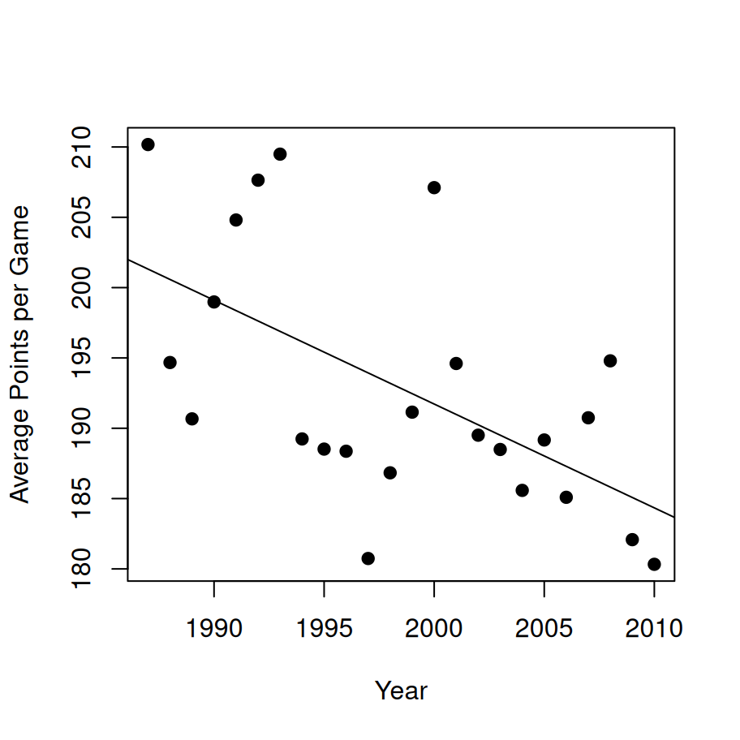

Thou shalt not answer questionnaires Or quizzes upon World Affairs, Nor with compliance Take any test. Thou shalt not sit With statisticians nor commit A social science
load("./data/afl24.Rdata") # load datahead(afl) # show the first few rows
home.team away.team home.score away.score year round weekday day month
1 North Melbourne Brisbane 104 137 1987 1 Fri 27 3
2 Western Bulldogs Essendon 62 121 1987 1 Sat 28 3
3 Carlton Hawthorn 104 149 1987 1 Sat 28 3
4 Collingwood Sydney 74 165 1987 1 Sat 28 3
5 Melbourne Fitzroy 128 89 1987 1 Sat 28 3
6 St Kilda Geelong 101 102 1987 1 Sat 28 3
is.final venue attendance
1 FALSE MCG 14096
2 FALSE Waverley Park 22550
3 FALSE Princes Park 19967
4 FALSE Victoria Park 17129
5 FALSE MCG 18012
6 FALSE Gold Coast Stadium 15867
1 Confidence intervals
As usual there are many ways to compute the confidence interval of the mean in R. One relatively simple one is with the ciMean function in the lsr package, which (conveniently) can take a data frame as input and computes confidence intervals for all the numeric variables:
ciMean(afl)
2.5% 97.5%
home.team* NA NA
away.team* NA NA
home.score 100.621214 102.39555
away.score 90.250700 91.98720
year 1998.566873 1998.97782
round 11.999916 12.40185
weekday* NA NA
day 15.594242 16.13388
month 6.006252 6.10548
is.final* NA NA
venue* NA NA
attendance 31597.324710 32593.12361
By default it returns a 95% confidence interval, but you can adjust the conf argument if you want something different. For instance, here’s an 80% confidence interval
ciMean(x = afl, conf = .8)
10% 90%
home.team* NA NA
away.team* NA NA
home.score 100.928367 102.088392
away.score 90.551304 91.686592
year 1998.638012 1998.906681
round 12.069495 12.332274
weekday* NA NA
day 15.687658 16.040461
month 6.023429 6.088303
is.final* NA NA
venue* NA NA
attendance 31769.706887 32420.741437
You can also give it a single variable as input if you like:
ciMean( afl$home.score )
2.5% 97.5%
[1,] 100.6212 102.3955
2 Comparing two means
Does the home team tend to outscore the away team? This requires a paired samples t-test:
Paired samples t-test
Variables: home.score , away.score
Descriptive statistics:
home.score away.score difference
mean 101.508 91.119 10.389
std dev. 29.660 29.027 44.335
Hypotheses:
null: population means equal for both measurements
alternative: different population means for each measurement
Test results:
t-statistic: 15.359
degrees of freedom: 4295
p-value: <.001
Other information:
two-sided 95% confidence interval: [9.063, 11.716]
estimated effect size (Cohen's d): 0.234
Are finals games lower scoring than home and away games? This requires an independent samples t-test:
Warning in independentSamplesTTest(total.score ~ is.final, afl): group variable
is not a factor
Welch's independent samples t-test
Outcome variable: total.score
Grouping variable: is.final
Descriptive statistics:
FALSE TRUE
mean 193.064 183.680
std dev. 38.602 34.235
Hypotheses:
null: population means equal for both groups
alternative: different population means in each group
Test results:
t-statistic: 3.762
degrees of freedom: 224.433
p-value: <.001
Other information:
two-sided 95% confidence interval: [4.468, 14.3]
estimated effect size (Cohen's d): 0.257
3 Categorical associations
Are all teams equally likely to play their home games on every weekday? For that we might consider using a chi-square test of categorical association, but as you can see from the output below, a little care is needed:
The reason for the warning, of course, is that with so few games played on weekdays, many of the expected cell counts are very small, and that violates one of the assumptions of the chi-square test. So let’s create a new variable that collapses these:
Now we just have three levels of this factor, corresponding to Saturday games, Sunday games, and weekday games. So if we run the test of association with this version of the variable we no longer get the warning message:
associationTest(~ home.team + weekday_small, afl)
Chi-square test of categorical association
Variables: home.team, weekday_small
Hypotheses:
null: variables are independent of one another
alternative: some contingency exists between variables
Observed contingency table:
weekday_small
home.team M-F Sat Sun
Adelaide 27 94 114
Brisbane 19 132 131
Carlton 25 179 62
Collingwood 64 167 55
Essendon 65 158 66
Fitzroy 6 84 10
Fremantle 21 66 92
Geelong 21 185 79
Hawthorn 27 189 63
Melbourne 51 140 87
North Melbourne 93 123 69
Port Adelaide 17 78 69
Richmond 61 138 68
St Kilda 37 174 68
Sydney 31 85 161
West Coast 53 93 138
Western Bulldogs 31 141 89
Expected contingency table under the null hypothesis:
weekday_small
home.team M-F Sat Sun
Adelaide 35.5 121.8 77.7
Brisbane 42.6 146.1 93.3
Carlton 40.2 137.8 88.0
Collingwood 43.2 148.2 94.6
Essendon 43.7 149.7 95.6
Fitzroy 15.1 51.8 33.1
Fremantle 27.0 92.8 59.2
Geelong 43.1 147.7 94.3
Hawthorn 42.1 144.6 92.3
Melbourne 42.0 144.0 92.0
North Melbourne 43.1 147.7 94.3
Port Adelaide 24.8 85.0 54.2
Richmond 40.3 138.3 88.3
St Kilda 42.1 144.6 92.3
Sydney 41.8 143.5 91.6
West Coast 42.9 147.2 93.9
Western Bulldogs 39.4 135.2 86.3
Test results:
X-squared statistic: 480.877
degrees of freedom: 32
p-value: <.001
Other information:
estimated effect size (Cramer's v): 0.237
4 Comparing several means
Is there such a thing as a “high scoring ground”? Let’s take a look at the average number of points per game at each different ground, only considering grounds that had at least 100 games played during the the time period:
venue.use <-table(afl$venue)majors <- venue.use[venue.use >=100]# restrict the data to these gamesafl.majors <- afl[ afl$venue %in%names(majors), ]
Visually it does look like there might something here:
A first pass analysis for this would be ANOVA. The underlying statistical model in ANOVA and multiple regression is essentially the same, and the work is done by the lm function in R. However, it’s generally considered sensible to use the aov function in the first instance, because that does a few nice things that come in handy with later analyses.
mod <-aov(total.score ~ venue, afl.majors)
To analyse it as an ANOVA, the Anova function in the car package is very nice:
Anova(mod)
Anova Table (Type II tests)
Response: total.score
Sum Sq Df F value Pr(>F)
venue 237330 10 16.616 < 2.2e-16 ***
Residuals 5681696 3978
---
Signif. codes: 0 '***' 0.001 '**' 0.01 '*' 0.05 '.' 0.1 ' ' 1
It seems to be a real thing, but we’ll come back to that in a moment because we might have some worries about confounding variables.
4.1 Post hoc tests
I am not a fan of post hoc tests, even with corrections for Type I error inflation. To see why they drive me nuts, let’s run the output of the ANOVA through the posthocPairwiseT function. By default it uses the Holm correction, but lets just use the simpler and very conservatice Bonferroni correction:
Pairwise comparisons using t tests with pooled SD
data: total.score and venue
AAMI Stadium Etihad Stadium Gabba Gold Coast Stadium
Etihad Stadium 3.1e-13 - - -
Gabba 2.0e-05 1.00000 - -
Gold Coast Stadium 0.20642 1.00000 1.00000 -
MCG 3.8e-11 1.00000 1.00000 1.00000
Patersons Stadium 1.00000 5.0e-06 0.09684 1.00000
Princes Park 2.7e-11 1.00000 1.00000 1.00000
SCG 1.6e-07 1.00000 1.00000 1.00000
Skilled Stadium 0.02836 0.34402 1.00000 1.00000
Waverley Park 1.00000 1.1e-08 0.00317 1.00000
Western Oval 0.75909 2.4e-12 1.4e-07 0.00096
MCG Patersons Stadium Princes Park SCG
Etihad Stadium - - - -
Gabba - - - -
Gold Coast Stadium - - - -
MCG - - - -
Patersons Stadium 0.00075 - - -
Princes Park 1.00000 2.6e-05 - -
SCG 1.00000 0.00573 1.00000 -
Skilled Stadium 1.00000 1.00000 0.31433 1.00000
Waverley Park 2.0e-06 1.00000 1.3e-07 9.0e-05
Western Oval 2.7e-10 0.00371 9.9e-12 3.5e-09
Skilled Stadium Waverley Park
Etihad Stadium - -
Gabba - -
Gold Coast Stadium - -
MCG - -
Patersons Stadium - -
Princes Park - -
SCG - -
Skilled Stadium - -
Waverley Park 0.74049 -
Western Oval 9.2e-05 0.08420
P value adjustment method: bonferroni
My main complaint? I have no idea what this means because I didn’t really have any idea what I was looking for. I could certainly run through all these automatically-detected “significant” relationships to see what makes any sense, but I honestly don’t know what that would buy me. Basically I’m not sure why I’m calculating a \(p\)-value (a tool designed to test hypotheses) in a situation where I really didn’t have any hypotheses ahead of time. To my mind this use of hypothesis testing has the effect of eroding the boundary between confirmatory tests (where the researcher has a theory ahead of time), and exploratory analyses (where we’re just looking for interesting patterns). I’m a big fan of doing both things as part of science, of course, I just think they need to be kept clearly separate :-)
But that’s a topic for another time.
5 Assessing relationships
One thing that people commented on a lot during this time period was the fact that the games became lower scoring over time. Is that a real effect, or was it just random noise?
mod <-lm(total.score ~ year, afl)summary(mod)
Call:
lm(formula = total.score ~ year, data = afl)
Residuals:
Min 1Q Median 3Q Max
-148.84 -24.20 -0.09 24.71 139.02
Coefficients:
Estimate Std. Error t value Pr(>|t|)
(Intercept) 1668.10138 169.27250 9.855 <2e-16 ***
year -0.73819 0.08469 -8.717 <2e-16 ***
---
Signif. codes: 0 '***' 0.001 '**' 0.01 '*' 0.05 '.' 0.1 ' ' 1
Residual standard error: 38.13 on 4294 degrees of freedom
Multiple R-squared: 0.01739, Adjusted R-squared: 0.01716
F-statistic: 75.98 on 1 and 4294 DF, p-value: < 2.2e-16
yearly.score <-aggregate( total.score ~ year, data = afl, FUN = mean)plot(x = yearly.score$year,y = yearly.score$total.score,type ="p",pch =19,xlab ="Year",ylab ="Average Points per Game")abline(coef = mod$coef)

That’s pretty clearly a real effect, but it does open up a new line of worries about the last analysis…
5.1 Hierarchical regression
Suppose we’re a little paranoid. Maybe the effect of venue is spurious: some grounds came into use at different years, and we know there’s an effect of year on the total.score. Similarly, folk wisdom has it that finals games are lower scoring, and those games are disproportionately likely to be played at the MCG. Maybe there’s an effect of the size of the crowd? Some stadiums are bigger than others? Maybe there’s an effect of weekday, and some venues do indeed get used on different days. Maybe it’s an effect of the teams playing, since different teams tend to play at different grounds (especially when considering the home team!) To address this let’s dump all those variables into a regression model, and then see if adding venue leads to an improvement in fit over and above those. In other words, we’ll do a hierarchical regression. Here it is in R:
Analysis of Variance Table
Model 1: total.score ~ year + home.team + away.team + is.final + weekday +
attendance + venue
Model 2: total.score ~ year + home.team + away.team + is.final + weekday +
attendance
Res.Df RSS Df Sum of Sq F Pr(>F)
1 3937 5266076
2 3947 5519332 -10 -253256 18.934 < 2.2e-16 ***
---
Signif. codes: 0 '***' 0.001 '**' 0.01 '*' 0.05 '.' 0.1 ' ' 1
Overall it does rather look like there are genuine differences between venues. Though of course there could be many other things we didn’t control for!
5.2 Testing a correlation
As an aside, it’s often noted that a Pearson correlation is essentially equivalent to a linear regression model with a single predictor. So we should be able to replicate the total.score ~ year analysis as a correlation. We use the cor.test function to run a hypothesis test here:
cor.test(x = afl$total.score, y = afl$year)
Pearson's product-moment correlation
data: afl$total.score and afl$year
t = -8.7166, df = 4294, p-value < 2.2e-16
alternative hypothesis: true correlation is not equal to 0
95 percent confidence interval:
-0.1611277 -0.1023575
sample estimates:
cor
-0.1318585
To see that these are giving the same answer, let’s take the raw correlation of \(r=-.13\), square it, and compare it to the (unadjusted) \(R^2\) value of 0.01739 reported above: